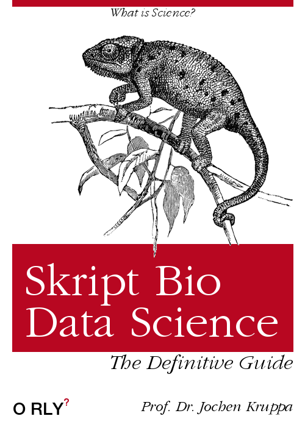

Bio Data Science

Willkommen
Auf den folgenden Seiten wirst du eine Menge über Statistik oder Data Science lernen. Du musst dafür nicht eine meiner Veranstaltungen besuchen. Gerne kannst du hier und dort einmal schauen, ob etwas für dich dabei ist. Das Skript wird fortlaufend von mir ergänzt. Neben dem Skript gibt es auch noch die erklärenden YouTube Videos. Ich freue mich, dass du Lust hast hier etwas zu lernen… oder aber du musst – da bald eine Klausur ansteht. Wie auch immer – schau dich einfach mal um. Im Anhang findest du auch einen kleinen Leitfaden für das Schreiben einer Abschlussarbeit. Vielleicht hilft dir das ja.
Du findest die gesammelten Klausurfragen auf GitHub. Die Klausurfragen zu den einzelnen Vorlesungen in einem Modul werden in den entsprechenden Übungen besprochen. Bitte komme in die Übungen.
Lernen…
Du liest hier gerade das Skript für meine Vorlesungen an der Hochschule Osnabrück an der Fakultät Agrarwissenschaften und Landschaftsarchitektur (AuL). Wie immer Leben kannst du auf verschiedene Arten und Weisen den Stoff, den ich vermitteln will, lernen. Daher gibt es noch zwei andere Möglichkeiten. Zum einen Lernen auf YouTube, mit meinen Lernvideos oder du schaust dir das Material auf GitHub an. Auf GitHub habe ich auch Informationen, die du vielleicht brauchen kannst. Ebenso findest du im Kapitel 2 noch andere Literaturempfehlungen.
… auf YouTube

Wenn du möchtest kannst du auf YouTube unter https://www.youtube.com/c/JochenKruppa noch einige Lehrvideos als Ergänzung schauen. In den Videos wiederhole ich Inhalte und du kannst auf Pause drücken um nochmal Programmierschritte nachverfolgen zu können.
… auf GitHub

Alle Materialien von mir findest du immer auf GitHub unter https://github.com/jkruppa/teaching. Selbst wenn du nicht mehr in einem meiner Kurse bist, kannst du so auf die Lehrinhalte immer nochmal zugreifen und die aktuellen Versionen haben. Auf GitHub liegt auch immer eine semesteraktuelle Version der gesammelten Klausurfragen für meine Module.
Kontakt
Wie erreichst du mich? Am einfachsten über die gute, alte E-Mail. Bitte bachte, dass gerade kurz vor den Prüfungen ich mehr E-Mails kriege. Leider kann es dann einen Tick dauern.
Einfach an j.kruppa@hs-osnabrueck.de schreiben. Du findest hier auch eine kurze Formulierungshilfe. Einfach auf den Ausklapppfeil klicken.
Bitte gib immer in deiner E-Mail dein Modul - was du belegst - mit an. Pro Semester unterrichte ich immer drei sehr ähnlich klingende Module. Daher schau nochmal hier in der Liste, wenn du unsicher bist.
Hallo Herr Kruppa,
… ich belege gerade Ihr Modul Modulname und hätte eine Bitte/Frage/Anregung…
… ich benötige Hilfe bei der Planung/Auswertung meiner Bachelorarbeit…
Mit freundlichen Grüßen
M. Muster